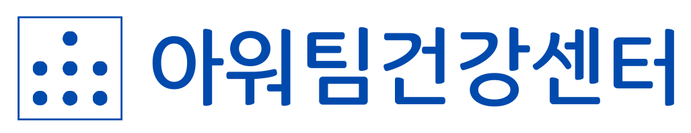

아워팀진단
센터소개
FnA
정보들
당신의 팀은 건강하십니까?
아워팀건강센터에서 무료로 자신의 팀(조직) 건강을 체크하세요.
빠르고 정확하게 진단받을 수 있습니다.
간단한 문진표 작성
정확하고 신속한 전문가 진단
처방과 대안 상담
팀 진단 시작하기
어떻게 체크 하나요?
1
문진표 작성
4페이지 팀 기본, 구조, 체계, 문화에 대한 정보를 입력하세요.
2
문진표 제출
정보를 확인하시고, 센터로 제출해주세요. (자동 이메일 전송)
3
AI 전문가 분석
전문가 정보를 분석하여 진단 결과를 가르쳐드립니다.
4
개선 상담
더 구체적인 처방과 개선 방안에 대해 상담을 받아보세요.
왜 아워팀건강센터인가?
간단하고 빠른 진단
: 쉽게 진단할 수 있습니다.
핵심 파악
: 조직의 일과 역할에 대해 진단할 수 있어요.
실용적 제안
: 당장 적용할 수 있는 개선에 대해 이야기합니다.
"아워팀 건강 검진으로 문제를 발견하고,
더 나은 우리 팀을 만들어갈 수 있습니다."